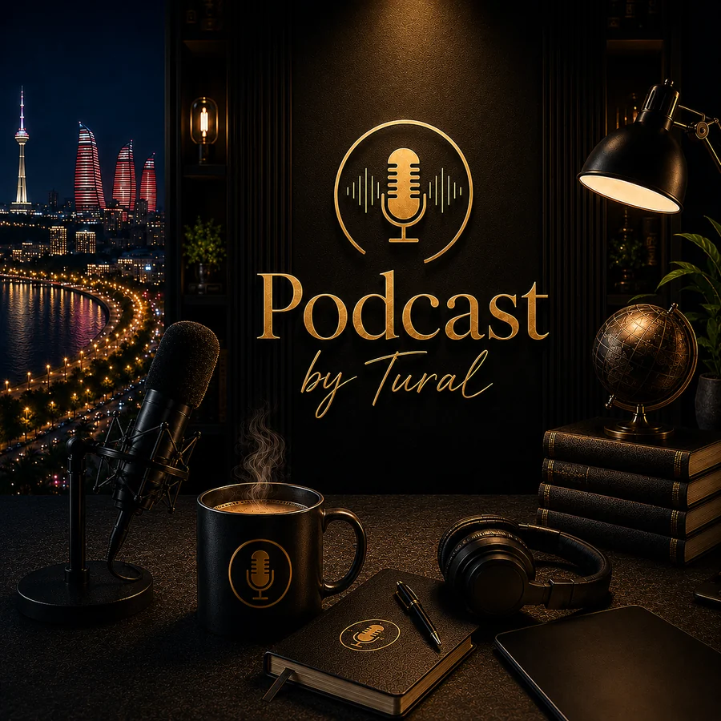
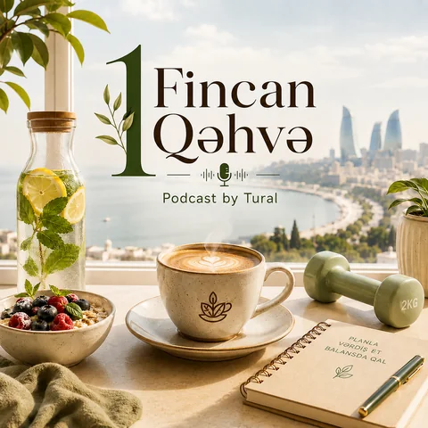
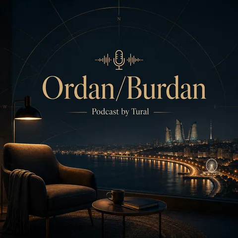

Ordan/Burdan
Zəlzələ Anında Nə Etməliyik?
Zəlzələdən əvvəl hazırlıq, hadisə anında düzgün davranış və sonrakı təhlükələrə daha soyuqqanlı yanaşmaq.
Podcast by Tural
Sağlamlıq, münasibətlər, insan davranışı və gündəlik həyat haqqında süni motivasiya olmadan—şəxsi təcrübə, araşdırma və açıq düşüncə ilə.

Bir podkast, iki seriya
Hər iki seriya eyni Podcast by Tural lentində yayımlanır, amma fərqli mövzulara və əhvala sahibdir.

Qidalanma, hərəkət, yuxu, enerji, çəki idarəetməsi və sağlam vərdişlər haqqında praktik, gündəlik həyata uyğun söhbətlər.
Seriyanı kəşf et ↗
Münasibətlər, insan davranışı, seçimlər və həyatın çox vaxt açıq danışmadığımız tərəfləri haqqında düşünülmüş söhbətlər.
Seriyanı kəşf et ↗Haradan başlamaq olar?
Zəlzələdən əvvəl hazırlıq, hadisə anında düzgün davranış və sonrakı təhlükələrə daha soyuqqanlı yanaşmaq.
Dinləyiciyə yalnız yaxşı hiss etdirmək deyil, düşünmək və hərəkət etmək üçün real əsas vermək.
Mürəkkəb mövzuları lazımsız terminlərsiz, gündəlik həyatda tətbiq edilə bilən formada danışmaq.
Şəxsi təcrübəni həqiqət kimi satmadan, fərziyyə ilə faktın yerini qarışdırmadan danışmaq.
Layihə haqqında
Podcast by Tural şəxsi müşahidəni, araşdırmanı və real həyat təcrübəsini bir araya gətirən müstəqil platformadır.
Məqsəd hər şeyi bilən obrazı yaratmaq deyil. Məqsəd daha yaxşı suallar vermək, zəif fikirləri yoxlamaq və dinləyiciyə söhbətdən sonra özü ilə aparacağı bir şey verməkdir.
Hekayəni oxuSpotify, Apple Podcasts, digər dinləmə platformaları və sosial şəbəkələrə bir yerdən keç.